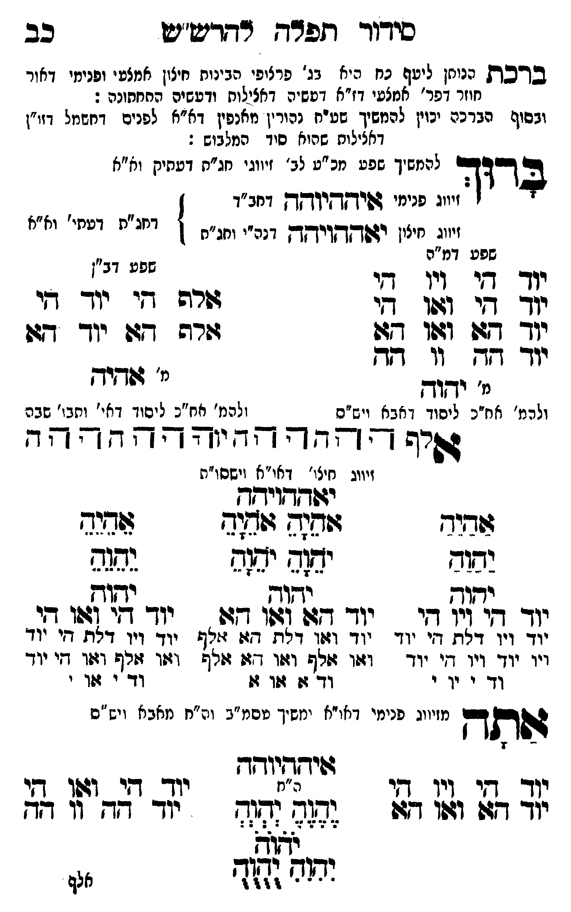

Neue Klartextfassung
■ ברכת הנותן ליעף כח ■ [היא בג' פרצופי הבינות חיצון אמצעי ופנימי דאור חוזר דפר' אמצעי דז"א דעשיה דכללות ורביעיה התחתונה:] [ובסוף הברכה יכוין להמשיך שע"ח נהורין מאנפין לפנים בחשמל זו"ן דכללות שהוא סוד המלבוש[?]:] ברוך [להמשיך שפע מכ"ע לב' זיווגי חג"ת דעתיק וא"א] [זיווג פנימי איההיוהה דחב"ד] [זיווג חיצון יאההויהה דכ"ח ותו"ח] [דחג"ת דעתי' וא"א] === טבלה === [טור ימין — שפע דמ"ה] יוד הי ויו הי יוד הי ואו הי יוד הא ואו הא יוד הה וו הה [מ' יהוה] [ולכת' חב"ד ליסוד דאבא ויש"ס] [טור שמאל — שפע דב"ן] אלף הי יוד הי אלף הא יוד הא [מ' אהיה] [ולכת' חב"ד ליסוד דאי' ותבו' שבה] === סוף טבלה === אלף ה הה ו וה יה יהוה הההה [זיווג חיצו' דאו"א וישסו"ת] יאההויהה === טבלה === [טור ימין] אַהַיַהַ יַהַוַהַ יהוה יוד הי ויו הי יוד ויו דלת, הי יוד ויו יוד ויו, הי יוד וד י וי י [טור אמצעי] אָהָיָהָ אָהָיָהָ יָהָוָהָ יָהָוָהָ יהוה יוד הא ואו הא יוד ואו דלת, הא אלף ואו אלף ואו, הא אלף וד א או א [טור שמאל] אֵהֵיֵהֵ יֵהֵוֵהֵ יהוה יוד הי ואו הי יוד ויו דלת, הי יוד ואו אלף ואו, הי יוד וד י או י === סוף טבלה === אתה [מזיווג פנימי דאו"א ימשך עסמ"ב ונרנח"י דחכמה ויש"ס] איההיוהה === טבלה === [טור ימין] יוד הי ויו הי יוד הא ואו הא [טור אמצעי] [ה"ח] יֶהֶוֶהֶ יְהְוְהְ יֹהֹוֹהֹ יִהִוִהִ יֻהֻוֻהֻ [טור שמאל] יוד הי ואו הי יוד הה וו הה === סוף טבלה ===
Original gegen neue OCR · Niqqud für Vergleich ausgeblendet
Original
■ ברכת הנותן ליעף כח ■ [היא בג' פרצופיK048-001 הבינות חיצון אמצעי ופנימי דאור חוזר דפר' אמצעי דז"א דעשיה דכללות ורביעיה התחתונה:] [ובסוף הברכהK048-002 יכוין להמשיך טו"ב לבושין כורין מלאיןK048-003 לפנים בחשמל זו"ן דכללותK048-004 שהוא סוד המלבוש:] ברוך [להמשיךK048-005 שפע מכ"ע לב' זיווגי חג"תK048-006 דעתיק וא"א] [זיווגK048-007 פנימי איההיוהה דחב"ד] [זיווגK048-008 חיצון יאההויהה דכ"ח ותו"ח] [דחג"ת דעתי' וא"א] === טבלה === [טור ימין —K048-009 שפע דמ"ה]K048-010 יוד הי ויו הי יוד הי ואו הי יוד הא ואו הא יוד ההK048-011 וו הה [מ' יהוה] [ולכת' חב"ד ליסוד דאבא ויש"ס] [טור שמאל — שפע דב"ן] אלף הי יוד הי אלף הא יוד הא [מ' אהיה] [ולכת' חב"ד ליסודK048-012 דאי' ותבו' שבה] === סוף טבלה === אלף ה הה ו וה יה יהוה הההה [זיווגK048-013 חיצו' דאו"א וישסו"ת] יאההויהה === טבלה === [טור ימין] אהיה יהוה יהוהK048-014 יוד הי ויו היK048-015 יוד ויו דלת, היK048-016 יוד ויו יוד ויו, היK048-017 יוד וד י ויK048-018 י [טור אמצעי] אהיה אהיה יהוה יהוה יהוה יוד הא ואו הא יוד ואו דלת, הא אלף ואו אלף ואו, הא אלף וד א או א [טור שמאל] אהיה יהוה יהוה יוד הי ואו הי יוד ויו דלת, הי יוד ואו אלף ואו, הי יוד ודK048-019 י אוK048-020 י === סוף טבלה === אתה [מזיווגK048-021 פנימי דאו"א ימשך עסמ"ב ונרנח"י דחכמה ויש"ס] איההיוהה === טבלה === [טור ימין]K048-022 יוד הי ויו הי יוד הא ואו הא [טור אמצעי] [ה"ח] יהוה יהוה יהוה יהוה יהוה [טור שמאל] יוד הי ואו הי יוד הה וו הה === סוף טבלה ===K048-023
OCR · fehlbar
סירוד דזפרח רדדרישיט כב בדכת ננוחן ליעד גח ניא בנ' פרציפיK048-001 הבינות חיצון אמצעי ופנימי דאור חוזר דפר' אמצעי דז"א דטשיה דאצילוח ודטשיה התחתונה : ובסוף הברכעK048-002 יכוין להמשיך שטיח נהורין אנפין דא"אK048-003 לפנים דחשמל דזי"ן דאצילותK048-004 שהוא סיד המלבוש : בדוד להמשיךK048-005 שפע מכ"ע לב' זיווגי חג"חK048-006 דעתיק וא"א יי:K048-007 פנימי 4פיץךקיוךקךץ דחב"ד זיווגK048-008 חיצון יגשדקךויחךץ דנה"י וחג"ח ) וצ"ת דליזי' יז"זK048-009 שפע דמ"ה שפע דביK048-010 יוד גי זינו גי - יך קי 1061 די שרש די ייך- די יוך דד ו4וו דזן דרה 747 יו- דגו יוך זשK048-011 וו דגד ולהמ' אח"כ ליסוך ז אבא ויש"ס להנמ' אח"כ ליסוךK048-012 דאי' ותבו' שבה היג - - - - - - 4 - - - - - - זיווגK048-013 חיצו' דאו"א וישסו"ת יג(דךויחח 4דזוד זוחנ גוג[ שחנד נשוד יב ימזק נש(9 2321 קק[ש תתוש יודך ד[י ויו דשי יו דז: (4וו 177 : יוך די 431 27K048-014 יוד ויו. דלת זי יוד יזד וצין דלת. דז: זזתןזK048-015 יוד ויו דלת דיK048-016 יוד ויו יוד ויו דזי יוד וז(ו זולף וז:ו דזן רל וזזו זזרף דולו דיK048-017 יוד וד י ידK048-018 י ודך ו 104 זו דוד'K048-019 י 4(ךK048-020 י יווג פנימי דאוייא ימשיך טסמ"ב וג"ח מאב: ויש"ס גתך מזיווגK048-021 פנימי דאו"א ימשיך טסמ"ג וג"ח מאבא ויש 122222223 נלך חו לין גו '] יו די: (1[4. תי יזך דג: וז 64 (ב(2 (ד(חK048-022 יוד - דד ']ז 79 ללללל ווש (['ח יליK048-023